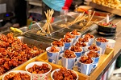
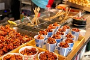

A koreai ételek 🍲
A koreai konyhaművészet változatosnak, sokszínűnek és általában véve egészségesnek mondható. Hatással volt rá a kínai és a japán konyha, de számos étele rendkívül különböző ezektől, elkészítési módját, alapanyagait és ízesítését tekintve is. Jellegzetes ételei közé sorolják a fermentált kimcshit, a húsételek közül a pulgogit és a kalbit, a pibimbapot, a japán makiszusival rokon kimbapot. Az italok közül ismert égetett szesz a szodzsu. A koreai gasztronómia három legfontosabb ételízesítője a szójaszósz (kandzsang), a kocshudzsang (csilipaprikakrém) és a töndzsang (szójababkrém).
Királyi konyhaművészet
A Csoszon-udvarban az ételek kiemelkedő fontosságúak voltak, ezt támasztja alá, hogy a hat minisztériumban (육조, Jukcso) számos hivatalnok volt felelős a királyi udvar ellátásáért, az ételek elkészítéséért, beszerzéséért, a munkafolyamatok ellenőrzéséért. Ezen felül a palotában több száz asszony, úgynevezett kungnjo (궁녀, „palotahölgy”) dolgozott, akik többek között az ételek elkészítéséért és felszolgálásáért voltak felelősek, ételtípusonként. Volt külön szakács ttokféleségekhez, levesekhez, teákhoz stb. A pontos hierarchiát törvényben határozták meg.

Templomi konyhaművészet
A koreai templomi konyhaművészet a koreai buddhista templomokból eredő ételek összefoglaló neve. A Silla korszakban (i. e. 57 – i. sz. 935) a buddhista templomokban áldozati ételként cshalbapot (찰밥, főtt ragacsos rizs), jakkvát és jumilgvát szolgáltak fel. A Korjo korban a szangcshu sszam (növénylevélbe tekert étel) és jaksik (약식, „gyógyhatású ételek”) fejlődtek tovább.
A koreai udvar konyhaművészete szoros kapcsolatban van a koreai buddhista gasztronómiával. Az udvarban dolgozó szanggungoknak, akik az ételeket készítették, miután kiöregedtek a szolgálatból, el kellett hagyniuk a palotát. Mivel férjhez nem mehettek, többük buddhista templomokban keresett menedéket apácaként, és továbbadták az udvari ételek elkészítési technikáit, összeolvasztva azokat a buddhista konyhaművészettel.
A koreai buddhista templomi ételek vegánok, azaz semmilyen állati eredetű összetevőt nem tartalmaznak, ezen kívül hagymaféléket sem használnak az ételek elkészítésekor.

Utcai ételek
Az utcai ételek (street food) nagyon változatosak Dél-Koreában, a nagyobb városokban számos úgynevezett „gasztroutca” (food street) található, ahol egymást érik a különféle specialitásokat kínáló ételstandok, koreai nevükön phodzsangmacshák. Jellemző harapnivalók a ttokpokki, a thügim, az omuk, a szunde, a cson, a kimbap, a hottok. Sütemények és édességek is széles választékban kaphatóak, például a gofritésztához hasonlóan készülő, különféle töltelékű sütemények.
×


 
